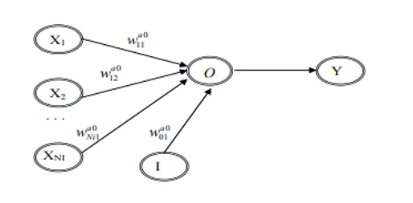
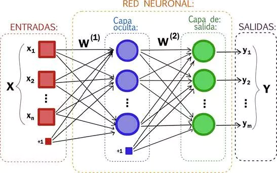

Imágenes
Posturas
Sonidos
Red neuronal
Home
Red Neuronal
Explicación acerca de las redes neuronales, manejadas en los
modelos
Análisis De Una Red Neuronal (Regresión)
Para que sea posible modelar una red de regresión simple se,
tendrá que usar una estructura correspondiente a un modelo de
perceptrón multicapa. La salida de la red neuronal siempre
coincidirá con una predicción que se proporcionará por una
regresión lineal simple. La estructura del antes mencionado
perceptrón corresponderá a una variable de entrada más una
constante, la cual no tendrá una capa oculta, pero sí con un
nodo que se encargará de representar una salida, junto a una
variable de salida.

¿Qué es una red neuronal?
Una red neuronal se trata de un método para crear inteligencias
artificiales el cual las hace procesar datos de una forma
inspirada en la estructura del cerebro humano, tiene una
cantidad de neuronas artificiales interconectadas las cuáles
tienen su propia estructura, un input por donde recibe los
datos, pesos que influyen en la predicción que se realizará,
función de transferencia, un límite y una función de activación,
la forma en la que los pesos influyen en la predicción es a
través de un perceptrón el cuál se trata de un algoritmo de
clasificación que puede ser entrenados haciendo uso de un
gradiente descendente, es importante fijar los parámetros
adecuados para facilitar y agilizar el entrenamiento de dicho
perceptrón, la salida se ve afectada por una función y el
límite, ambos definidos previamente por el desarrollador de la
red, la función de salida puede ser de 2 formas, activación de
paso o logística, la primera se trata de una forma más simple de
crear la función, la activación logística constituye un método
más complejo y avanzado basándose en la función sigmoide, todo
esto se encuentra oculto y no es visible a los usuarios no
desarrolladores que hagan uso de una red neuronal con un
entrenamiento, realizado y dividido de la siguiente manera:

Parámetros de Teachable Machine:
Épocas: Consiste en la cantidad de veces en las que el modelo ha
procesado todas las muestras del conjunto de datos de
preparación, es decir, cada vez que se hace este proceso, se
dice que se ha completado una época. La cantidad de épocas que
se establecen al comenzar la preparación del modelo, será la
cantidad de veces que el modelo procesará todos los datos de
preparación. Logramos determinar que es necesario aumentar la
cantidad de épocas, con el fin de que el modelo obtenga mejores
resultados.
Tamaño del lote: Este valor normalmente no afecta en gran medida
al funcionamiento del modelo ni en los resultados finales del
mismo. Teniendo en cuenta esto, no será necesario ajustar este
valor para mejorar la eficacia del modelo. Así mismo, se refiere
al conjunto de muestras que se usan en una iteración de
preparación.
Tasa de Aprendizaje: Por otro lado, el valor de la tasa de
aprendizaje es bastante delicado, ya que hasta las diferencias
más mínimas, pueden influir significativamente en la eficacia
del aprendizaje del modelo. En pocas palabras, la tasa de
aprendizaje, le indica al sistema cuánto puede variar cada vez
que modifica la aproximación a lo que cree que es correcto.
Valor bajo: Aprendizaje lineal - Cuando tenemos un valor muy
bajo en la tasa de aprendizaje, el modelo aprenderá linealmente.
Una consideración con respecto a esto, es que en algunos casos,
el aprendizaje puede ser muy lento, tanto, que puede ser
inviable esperar a que finalice el aprendizaje.
Valor alto: Aprendizaje No lineal - Por otro lado, con un valor
más alto de tasa de aprendizaje, el modelo puede aprender mucho
más rápido. Sin embargo, el modelo puede estar aprendiendo y de
repente decidir probar con un valor diferente y perder parte de
lo aprendido.
¿Para qué sirve Teachable Machine?
Teachable Machine es una herramienta, que hace posible la
creación de modelos de aprendizaje automático de manera rápida y
accesible. Esta es una herramienta de inteligencia artificial
desarrollada por Google y basada en la web. En esta página
podemos entrenar a un modelo para que reconozca imágenes,
sonidos o posturas.
Análisis Final
Decidimos que para entrenar el modelo con imágenes, sonidos o
posturas, vamos a realizar entre 1.000 a 1.500 muestras de
imágenes y sonidos, esto con el fin de entrenar muy bien al
modelo. Además, entrenamos al modelo con 150 épocas cada uno,
debido a que era necesario aumentar este valor para obtener
mejores resultados en el modelo. Por otro lado, el tamaño del
lote no fue modificado, ya que la modificación de este valor no
representa una mejora significativa en la eficacia del modelo.
Por último, en cuanto a la tasa de aprendizaje, decidimos
manejarla con un valor de 0.0015, la cuál fue el resultado de
varias pruebas y fue la que arrojó al final mejores resultados
para nosotros.
Quisimos manejar un valor bajo, sin embargo, no pretendíamos
entrenar a nuestro modelo con los valores predeterminados de
Teachable Machine. Por otro lado, es cierto que con un valor
alto en la tasa de aprendizaje, existe la posibilidad de que el
modelo aprenda más rápido, sin embargo, nos enfocamos más en la
eficacia y exactitud del modelo, que en la velocidad con la que
aprendía. Adicionalmente, era necesario tener en cuenta que el
modelo podría estar aprendiendo rápidamente y de repente decidir
probar con un valor diferente y perder parte de lo aprendido.
Por esta razón decidimos manejarlo con este
valor.Significativamente, los valores que más se modificaron,
fueron las épocas y la cantidad de muestra tanto para imágenes,
como para sonidos. Esto debido a que eran los valores que más
influyen en la eficacia y aprendizaje del modelo y que menos
riesgo tenían de hacer que ese modelo perdiera alguna parte
aprendida durante el proceso.
Finalmente, se obtuvieron buenos resultados con los valores
utilizados a lo largo del proceso.